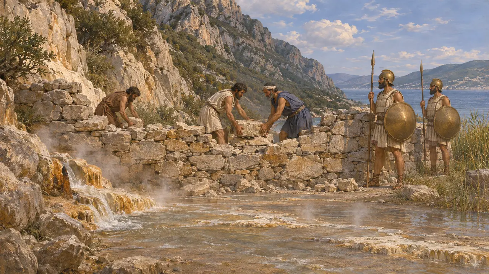
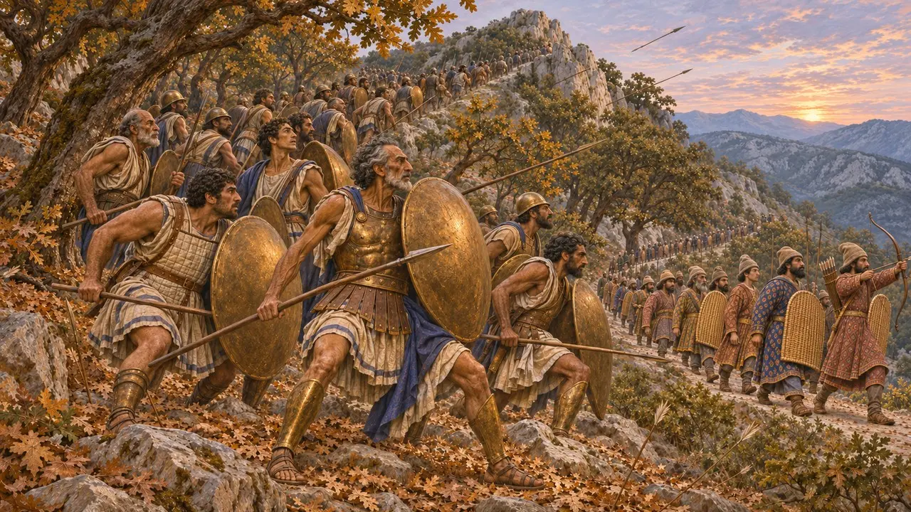
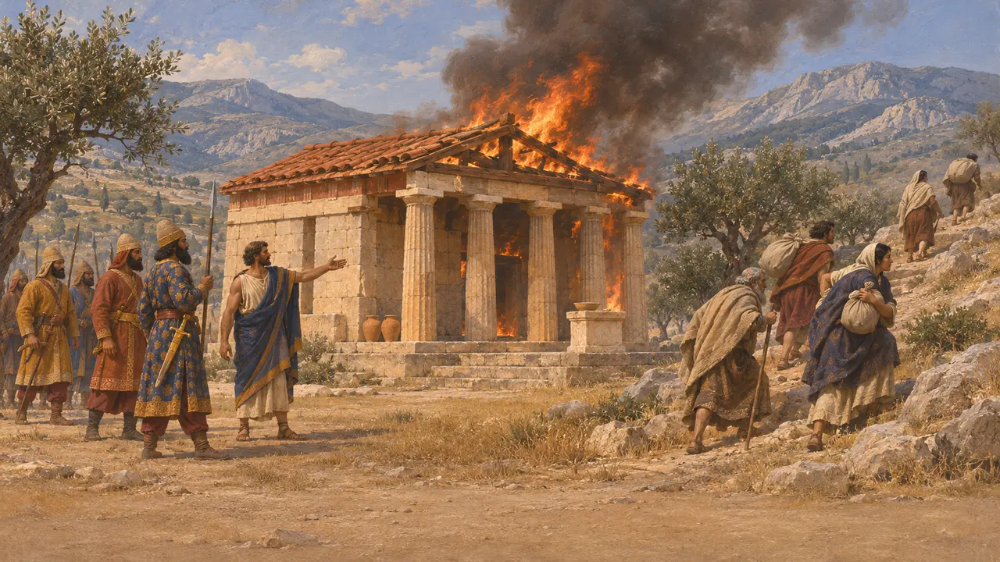
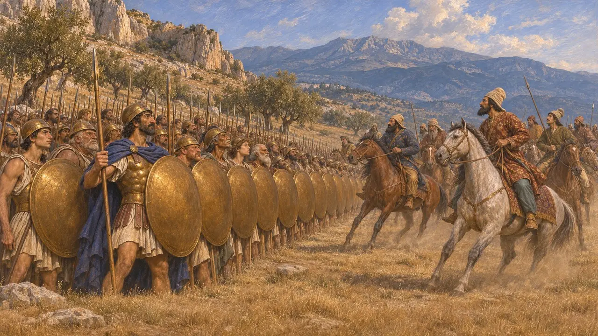

Los focenses
Pueblo de la Grecia central en torno al monte Parnaso, guardianes del sendero de Anopea, 480-479 a. e. c.
En el juego: Nivel 10: Las Puertas Calientes, Nivel 11: El final
Los focenses vivían en la Grecia central, entre Beocia y Tesalia, en torno al monte Parnaso y Delfos. En 480 a. e. c., mil de ellos custodiaban el sendero de la montaña sobre las Termópilas y cedieron el paso a los Inmortales. Después su tierra fue incendiada por el ejército del Rey, y en 479 a. e. c. mil de ellos sirvieron a Mardonio contra su voluntad.
En el juego: Los focenses defienden el sendero de Anopea en el nivel de las Termópilas y en su batalla campal; en el Acto II, una banda focense asalta el camino a Atenas, y en Platea los focenses combaten en la línea de Mardonio.

La vieja muralla
Relato antiguoHeródoto cuenta que los focenses habían levantado mucho antes un muro a través del paso de las Termópilas contra los tesalios y que dejaron que las aguas termales inundaran el camino. Los griegos del 480 a. e. c. lo reconstruyeron. Los focenses eran enemigos acérrimos de los tesalios, y por eso se pusieron del lado de los griegos.
Herodotus 7.176, 8.27-30

Los mil del sendero
Relato antiguoMil focenses custodiaban el sendero de Anopea. Al amanecer oyeron a los Inmortales entre las hojas caídas de los robles y se armaron, pero bajo las flechas persas retrocedieron hasta la cima, dispuestos a morir; los persas pasaron de largo y descendieron por detrás de los griegos.
Herodotus 7.217-218

Fócida incendiada
Relato antiguoTras el paso, cuenta Heródoto, el ejército del Rey, guiado por los tesalios, arrasó la Fócide e incendió sus ciudades y templos, entre ellos el santuario de Apolo en Abas. Muchos focenses habían huido a las alturas del Parnaso o a Anfisa.
Herodotus 8.31-33

Por Mardonio contra su voluntad
Relato antiguoEn 479 a. e. c., mil hoplitas focenses al mando de Harmocides se unieron a Mardonio, no por voluntad propia. Heródoto cuenta que Mardonio lanzó su caballería contra ellos como si quisiera aniquilarlos, y ellos cerraron filas y se mantuvieron firmes, y él los elogió. Otros focenses refugiados en el Parnaso hostigaron a su ejército.
Herodotus 9.17-18, 9.31
Fuentes
- Herodotus 7.176, 7.203, 7.212-218, 8.27-33, 9.17-18, 9.31